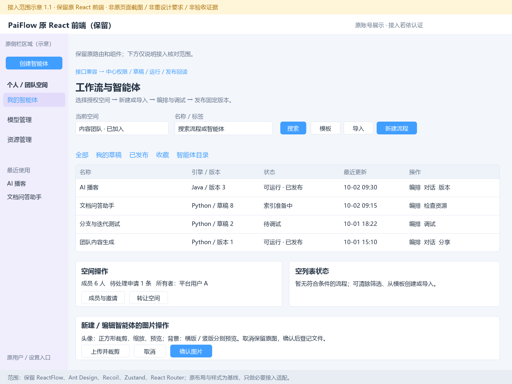
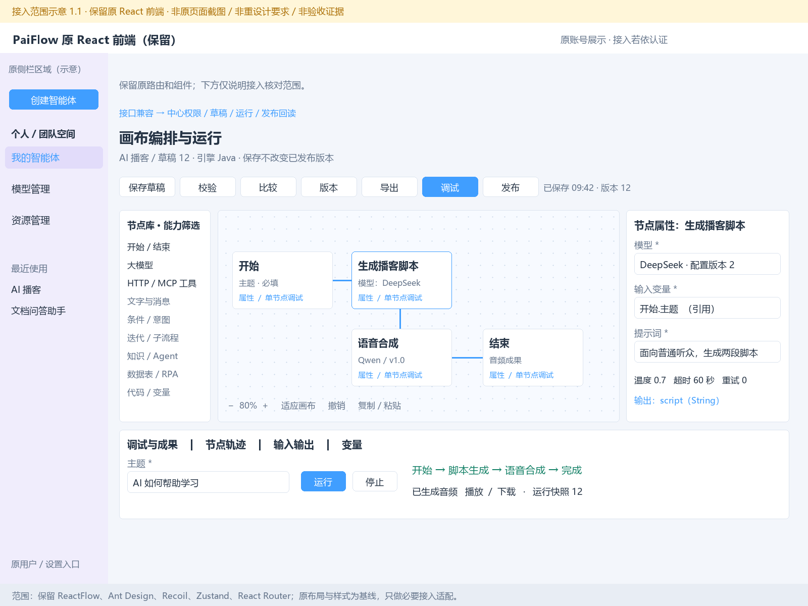
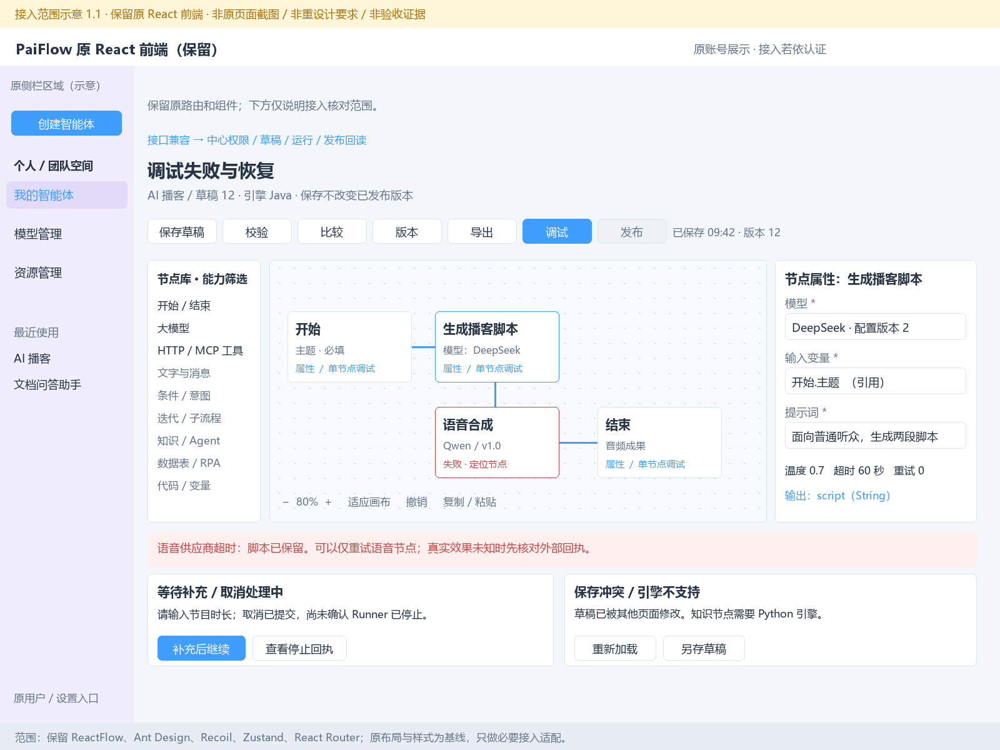
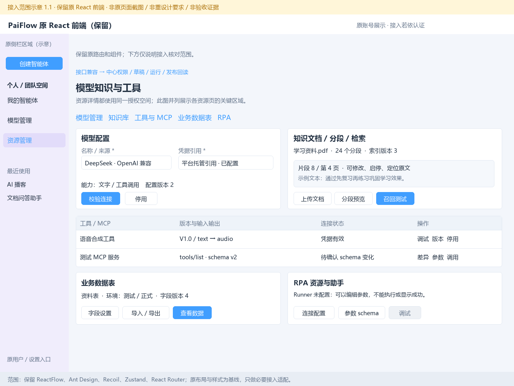
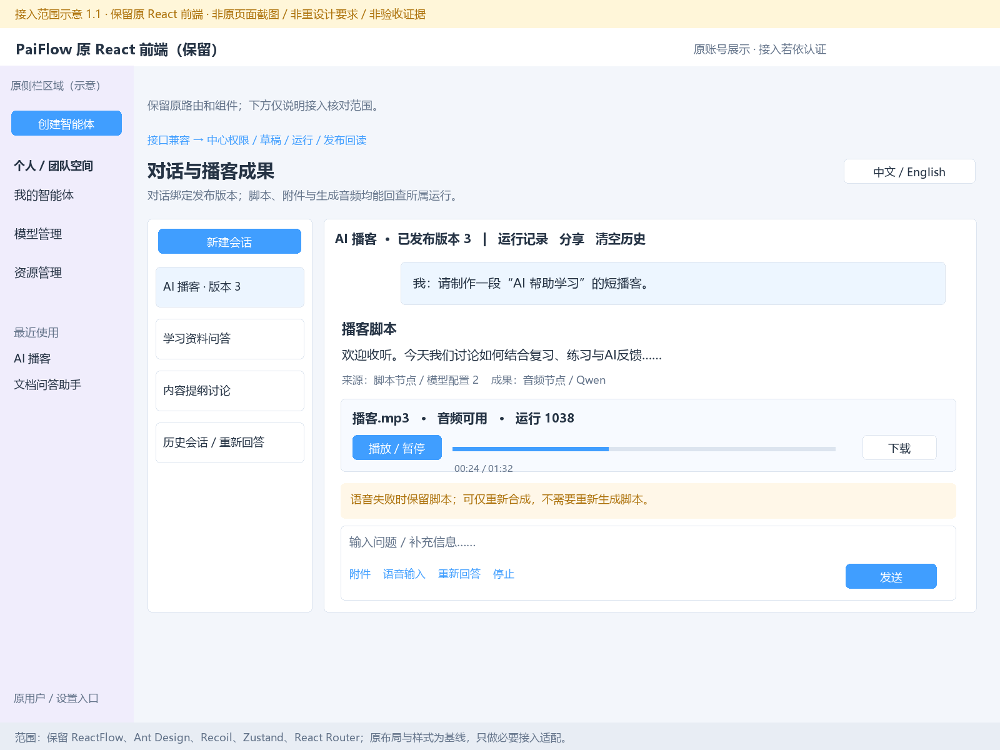
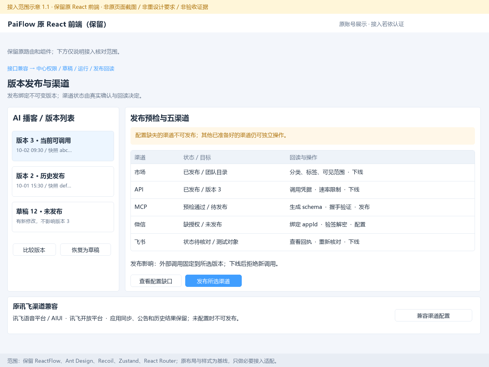
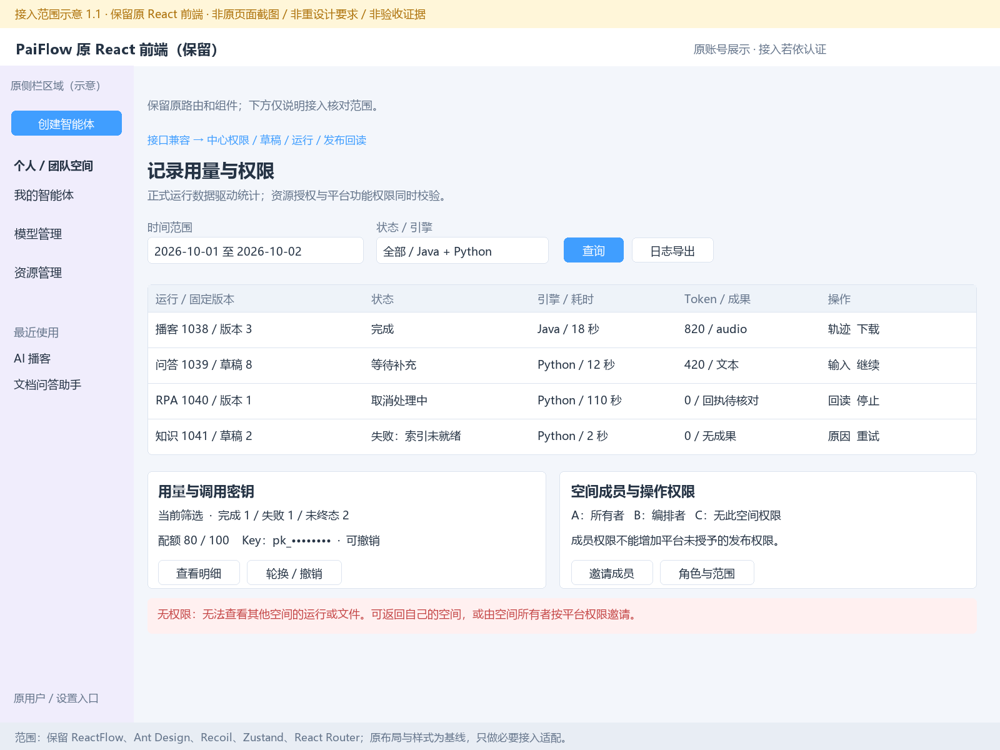

1. 工作流、空间选择、列表、空状态和图片裁剪
接入区域示意 · 1.1 · 原组件直接保留，不按此线框图重做页面；未连接服务、未执行业务。

2. 画布、节点属性、调试输入和运行成果
接入区域示意 · 1.1 · 原组件直接保留，不按此线框图重做页面；未连接服务、未执行业务。

3. 失败、等待补充、取消待确认与保存冲突
接入区域示意 · 1.1 · 原组件直接保留，不按此线框图重做页面；未连接服务、未执行业务。

4. 模型、知识分段、HTTP/MCP、数据表和RPA资源
接入区域示意 · 1.1 · 原组件直接保留，不按此线框图重做页面；未连接服务、未执行业务。

5. 历史会话、中英文切换、脚本、音频播放器、附件与失败恢复
接入区域示意 · 1.1 · 原组件直接保留，不按此线框图重做页面；未连接服务、未执行业务。

6. 版本、五主渠道、原讯飞兼容、回执和下线
接入区域示意 · 1.1 · 原组件直接保留，不按此线框图重做页面；未连接服务、未执行业务。

7. 运行记录、配额密钥、空间成员和权限拒绝
接入区域示意 · 1.1 · 原组件直接保留，不按此线框图重做页面；未连接服务、未执行业务。
